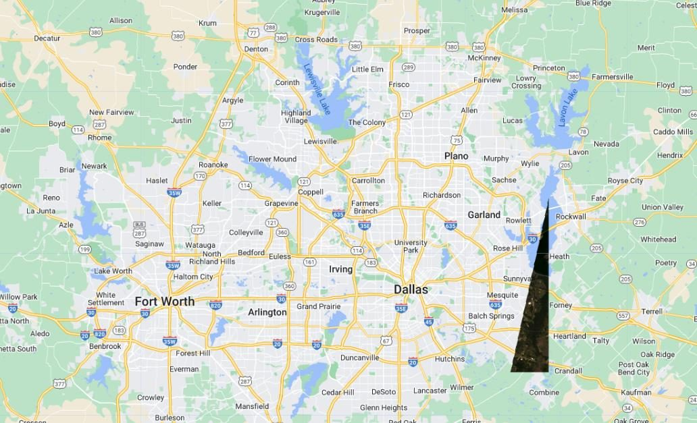
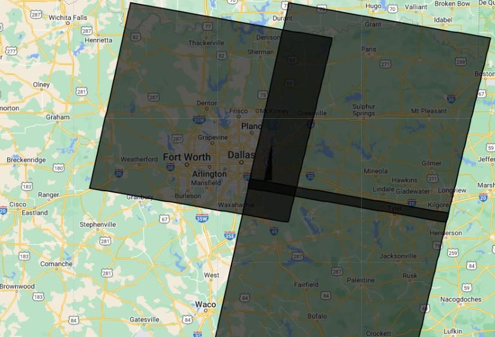
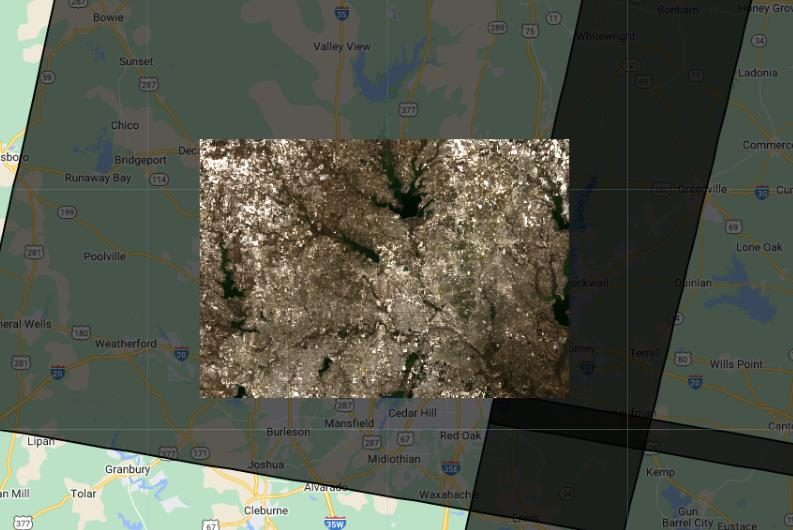

Descargar imagen satelital de Landsat 9 en Google Earth Engine
Aprende de manera sencilla a filtrar, visualizar y descargar imágenes satelitales de Landsat 9 desde Google Earth Engine.
Introducción #
En esta guía aprenderemos a descargar imágenes satelitales de Landsat 9 con Google Earth Engine. Landsat 9 forma parte del programa Landsat de la NASA y el USGS, que proporciona datos continuos de la superficie terrestre desde 1972. Usaremos Earth Engine para filtrar imágenes de Landsat 9, visualizarlas y exportarlas a Google Drive para su posterior análisis.
Objetivos #
- Filtrar imágenes satelitales de Landsat 9 según una región de interés (AOI).
- Visualizar las imágenes seleccionadas en el mapa.
- Exportar una imagen seleccionada a Google Drive en formato GeoTIFF.
Recursos #
- Shapefile de Path y Row de Landsat 4-9 (WRS-2 descendente, USGS)
- Landsat 9 Surface Reflectance Tier 1 Level-2 (L2)
Shapefile de Path y Row #
El shapefile "Landsat WRS-2 Descending Path Row" describe las rutas (paths) y filas (rows) del sistema de cuadrícula de Landsat 4-9. Cada polígono representa una combinación única de ruta y fila, lo que permite identificar con precisión qué escena cubre tu zona y filtrar las imágenes que coinciden con ella.
Dataset Landsat 9 L2 #
Son imágenes de Landsat 9 en el nivel 2 de procesamiento. Están corregidas atmosféricamente y convertidas a reflectancia de superficie, por lo que sirven para monitoreo ambiental, análisis de cambios en el uso del suelo y detección de vegetación, entre otros usos.
| Característica | Detalle |
|---|---|
| Bandas | 19 bandas, incluidas visibles, infrarrojo cercano y térmicas |
| Resolución | 30 m en las bandas visibles e infrarrojo cercano |
| Cobertura temporal | Desde septiembre de 2021 |
| Cobertura geográfica | Áreas terrestres de todo el mundo |
| Procesamiento | Nivel 2: reflectancia de superficie corregida atmosféricamente |
Bandas de Landsat 9 #
Landsat 9 se lanzó en septiembre de 2021 y lleva los sensores OLI-2 (óptico) y TIRS-2 (térmico). Junto con Landsat 8 permite tener una imagen del mismo lugar cada 8 días. En la tabla ves las bandas de reflectancia de superficie del dataset.
| Banda | Región del espectro | Resolución |
|---|---|---|
| SR_B1 | Aerosol costero | 30 m |
| SR_B2 | Azul | 30 m |
| SR_B3 | Verde | 30 m |
| SR_B4 | Rojo | 30 m |
| SR_B5 | Infrarrojo cercano (NIR) | 30 m |
| SR_B6 | Infrarrojo de onda corta 1 (SWIR 1) | 30 m |
| SR_B7 | Infrarrojo de onda corta 2 (SWIR 2) | 30 m |
| ST_B10 | Térmica (temperatura de superficie) | 100 m, entregada a 30 m |
Al combinar bandas puedes resaltar distintos elementos del paisaje.
- Con 4-3-2 obtienes color natural, la imagen tal como la veríamos a simple vista.
- Con 5-4-3, el falso color infrarrojo, la vegetación sana aparece en rojo intenso.
- Con 6-5-4 es más fácil diferenciar cultivos, suelo desnudo y agua.
¿Por qué min 7600 y max 22000? Los valores de la Colección 2 vienen escalados. Para obtener reflectancia real se multiplican por 0.0000275 y se les suma -0.2. Los valores de visualización trabajan sobre la escala original.
Paso 1: Filtrar con la región de interés #
- Cargamos el shapefile de Path y Row de Landsat 4-9 (subido como asset a Earth Engine).
- Filtramos la colección de Landsat 9 por el período de interés, limitamos la cobertura de nubes y restringimos la búsqueda a la región de interés (AOI).
- Mostramos la primera imagen en el mapa.
Antes de ejecutar el código, dibuja tu zona de estudio con las herramientas de geometría del mapa y cámbiale el nombre a AOI en el panel de importaciones, porque así la llama el script. Para cargar el shapefile de Path y Row, descárgalo del USGS y súbelo a tus assets, como en el tutorial Importar shapefile en Earth Engine; luego cambia la ruta del asset por la tuya.
// Importar el shapefile de Path y Row var path_row = ee.FeatureCollection("projects/ee-sigeduca/assets/WRS2_descending"); // Filtrado de la colección por fecha, nubosidad y región var ls9 = ee.ImageCollection("LANDSAT/LC09/C02/T1_L2") .filterDate('2021-01-01', '2023-12-31').sort('system:time_start', true) .filter(ee.Filter.lte('CLOUD_COVER_LAND', 20)).filterBounds(AOI); // Visualización de la imagen en el mapa var visparam = {bands: "SR_B4,SR_B3,SR_B2", min: 7600, max: 22000, gamma: 1}; Map.centerObject(AOI, 8); Map.addLayer(ls9.first().clip(AOI), visparam, "Primera imagen de Landsat 9");

Paso 2: Agregar el polígono de Path y Row #
Añadimos al mapa los polígonos de Path y Row que tocan el AOI para ver qué escenas lo cubren.
// Agregar polígono Path y Row al mapa var ls9_path = path_row.filterBounds(AOI); Map.addLayer(ls9_path, {color: "#0000"}, "SHAPEFILE DE PATH Y ROW", 0);

Paso 3: Filtrar por Path y Row #
- Filtramos la colección con la ruta y fila obtenidas del polígono.
- Seleccionamos la primera imagen filtrada y solo las bandas espectrales B1 a B7.
// Filtro de Path y Row en la colección de imágenes var ls9_path_row = ls9.filter(ee.Filter.eq("WRS_PATH", 27)) .filter(ee.Filter.eq("WRS_ROW", 37)); var image_ls9 = ls9_path_row.first().select(["SR_B[1-7]"]); // Cargar imagen filtrada al mapa Map.addLayer(image_ls9.clip(AOI), visparam, "FILTRO POR PATH Y ROW", 0);

Paso 4: Exportar la imagen a Google Drive #
Exportamos la imagen seleccionada a Google Drive en formato GeoTIFF optimizado para la nube, y ejecutamos la tarea desde la pestaña Tasks.
Export.image.toDrive({ image: image_ls9, description: "landsat_9_image", folder: "landsat collections", region: AOI, scale: 30, maxPixels: 1e13, fileFormat: "TIFF", formatOptions: { cloudOptimized: true } });
Código completo #
Este es el script completo del tutorial. Cópialo, pégalo en el Code Editor y presiona Run. Luego ejecuta la exportación desde la pestaña Tasks.
// AOI: dibuja tu región de interés con las herramientas de geometría del mapa // y nómbrala "AOI" en el panel de importaciones. // Importar el shapefile de Path y Row (cambia la ruta por la de tu asset) var path_row = ee.FeatureCollection("projects/ee-sigeduca/assets/WRS2_descending"); // Filtrado de la colección por fecha, nubosidad y región var ls9 = ee.ImageCollection("LANDSAT/LC09/C02/T1_L2") .filterDate('2021-01-01', '2023-12-31').sort('system:time_start', true) .filter(ee.Filter.lte('CLOUD_COVER_LAND', 20)).filterBounds(AOI); // Visualización de la imagen en el mapa var visparam = {bands: "SR_B4,SR_B3,SR_B2", min: 7600, max: 22000, gamma: 1}; Map.centerObject(AOI, 8); Map.addLayer(ls9.first().clip(AOI), visparam, "Primera imagen de Landsat 9"); // Agregar polígono Path y Row al mapa var ls9_path = path_row.filterBounds(AOI); Map.addLayer(ls9_path, {color: "#0000"}, "SHAPEFILE DE PATH Y ROW", 0); // Filtro de Path y Row en la colección de imágenes var ls9_path_row = ls9.filter(ee.Filter.eq("WRS_PATH", 27)) .filter(ee.Filter.eq("WRS_ROW", 37)); var image_ls9 = ls9_path_row.first().select(["SR_B[1-7]"]); // Cargar imagen filtrada al mapa Map.addLayer(image_ls9.clip(AOI), visparam, "FILTRO POR PATH Y ROW", 0); // Exportar la imagen a Google Drive Export.image.toDrive({ image: image_ls9, description: "landsat_9_image", folder: "landsat collections", region: AOI, scale: 30, maxPixels: 1e13, fileFormat: "TIFF", formatOptions: { cloudOptimized: true } });
Conclusiones #
Esta guía muestra cómo filtrar, visualizar y exportar imágenes de Landsat 9 con Google Earth Engine. Trabajar con estas imágenes en la plataforma permite realizar análisis geoespaciales avanzados y estudiar cambios en la superficie terrestre a lo largo del tiempo.